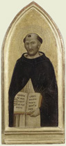

|  |
|---|
[70793] De 6 articulis, pr. Carissimo sibi in Christo fratri Gerardo Bisuntino ordinis fratrum praedicatorum, frater Thomas de Aquino eiusdem ordinis confraterna dilectione salutem. Percepi litteras vestras quosdam articulos continentes, super quibus vobis per me responderi petebatis. Et licet in pluribus essem occupatus, tamen ne vestrae caritatis petitioni deessem, quam cito facultas se obtulit, vobis rescribere curavi.
[70794] De 6 articulis, q. 1 arg. Prima ergo quaestio fuit, an stella quae magis apparuit, haberet figuram crucis.
[70795] De 6 articulis, q. 2 arg. Secunda, an haberet figuram hominis.
[70796] De 6 articulis, q. 3 arg. Tertia an haberet figuram crucifixi.
[70797] De 6 articulis, q. 3 ad arg. His simul respondeo, quod Chrysostomus (auctor operis imperfecti) quaedam similia narrat super Matth., non quasi asserendo, sed potius quasi ab aliis dictum recitando. Et quia pro certo non habetur, non reputo hoc esse praedicandum; praesertim quia non videtur probabile quod sacri doctores, ut Augustinus, Leo Papa, Gregorius et alii in suis sermonibus tacuissent, si aliquod robur auctoritatis haberet. Non enim decet praedicatorem veritatis ad fabulas ignotas divertere. Si autem ab aliquo sit praedicatum, non arbitror esse necessarium quod revocetur, nisi forte ex hoc populo scandalum sit exortum; et tunc non deberet ut erroneum reprobari, sed ut incertum exponi.
[70798] De 6 articulis, q. 4 arg. Quarta quaestio, an parvulae manus pueri Iesu nati creaverint stellas.
[70799] De 6 articulis, q. 4 ad arg. Ad quod respondeo, quod locutio haec non est propria. Nam parvulae manus sunt manus humanitatis, quarum non est creare. Sed quia unus et idem Christus est in divina et humana natura perfectus, potest huiusmodi locutio sane exponi, ut dicatur: manus parvulae istius pueri creaverunt stellas; idest, iste puer habens manus parvulas, creavit stellas. Tali enim modo loquendi ad quandam unionis expressionem aliquando doctores utuntur, sicut in quibusdam cantatur Ecclesiis: manus quae nos plasmaverunt, clavis confixae sunt. Non tamen haec sunt extendenda, vel praedicanda populo. Sed tamen si praedicatum sit, non arbitror revocandum; nisi super hoc error aut scandalum oriatur, in quo casu oporteret sanae locutionis sensum exponi. Non sunt autem in talibus, quantum fieri potest, simplicium animi sollicitandi.
[70800] De 6 articulis, q. 5 arg. Quinta quaestio est, an ex quo Simeon dixit beatae virgini, tuam ipsius animam pertransibit gladius, quolibet die naturali usque ad resurrectionem Christi septies illud recoleret pia virgo cum dolore vehementi.
[70801] De 6 articulis, q. 5 ad arg. Ad hoc etiam respondeo, quod istud eadem facilitate contemnitur qua dicitur, cum nullius auctoritatis robore fulciatur. Nec aestimo huiusmodi frivola esse praedicanda, ubi tanta suppetit copia praedicandi ea quae sunt certissimae veritatis. Neque tamen oportet quod revocetur, si praedicatum fuerit, nisi ex hoc scandalum fuisset exortum.
[70802] De 6 articulis, q. 6 arg. Sexta quaestio est, an circumstantias peccati trahentes in alterum genus, non notabiliter aggravantes, teneatur homo confiteri etiam innotescendo personam cum qua peccaverit.
[70803] De 6 articulis, q. 6 ad arg. Ad hoc respondendum videtur, quod omnino debet has homo confiteri: non enim homo confitetur peccatum suum nisi speciem confiteatur peccati, quae cognosci non potest nisi per circumstantias trahentes in aliud genus, ex quibus peccatum specificatur. Circumstantias vero non aggravantes, quae in aliud genus peccati non trahunt, non tenetur homo confiteri, sicut nec peccata venialia; licet sit laudabile quod homo ea confiteatur. Eadem enim ratio videtur esse de huiusmodi circumstantiis, et de venialibus peccatis. Circumstantiae autem dicuntur in aliud genus trahere quae specialem repugnantiam important ad aliquod praeceptorum divinae legis; sicut furtum simplex repugnat huic praecepto, non furtum facies; si autem furtum in loco sacro committatur, habet iam repugnantiam ad aliud praeceptum, quod est de veneratione sacrorum, et sic additur nova species peccati: unde consequens est quod addat aliam repugnantiam ad legem Dei; et ideo novam deformitatem peccati mortalis habebit, quod ex necessitate confiteri tenebitur. Sic igitur huiusmodi circumstantias aggravantes, quae non trahunt in aliud genus peccati, non credo quod aliquis teneatur confiteri. De expressione autem personae cum qua aliquis peccavit, videtur mihi quod non sit in confessione facienda, quando potest vitari. Primo quidem, quia prodere crimen alterius et laedere famam est peccatum; quod maxime vitandum est in confessione, per quam quis quaerit praeterita peccata delere. Secundo, quia a domino, Matth. XVIII, est forma denuntiandi peccatum proximi descripta, contra quam agere non licet. Tertio, quia in confessione est credendum peccatori confitenti et pro se et contra se; sed contra alium nullo modo est ei credendum; alioquin daretur multis occasio fictae confessionis et fraudulentae infamationis. Et ideo si potest speciem peccati confiteri non innotescendo personam cum qua peccavit, peccat eam exprimendo, nisi forte salvato correctionis ordine, quem dominus statuit. Si vero speciem peccati exprimere non possit nisi exprimendo personam cum qua peccavit, puta si cum sorore concubuit, necesse est ut exprimendo peccati speciem, exprimat personam. Sed si fieri potest, debet quaerere talem confessorem, qui personam sororis penitus non cognoscat. Quod autem dixi, circumstantias aggravantes quae non trahunt in aliud genus peccati, non esse de necessitate confitendas, non est referendum ad numerum, quem aliquis confiteri tenetur, si potest: quia iam non est unum peccatum, sed multa. Haec sunt, frater carissime, quae ad praesens mihi occurrunt quaestionibus a vobis propositis respondenda: pro quo mihi, si placet, orationum suffragia impendatis.